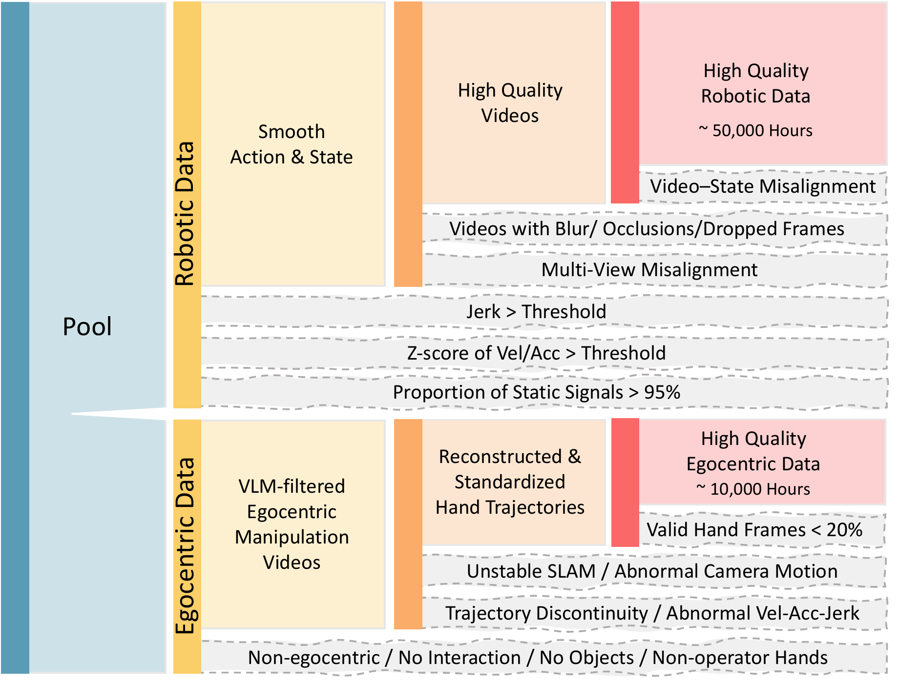
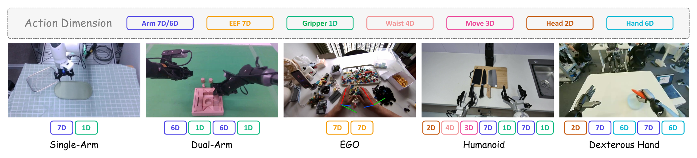
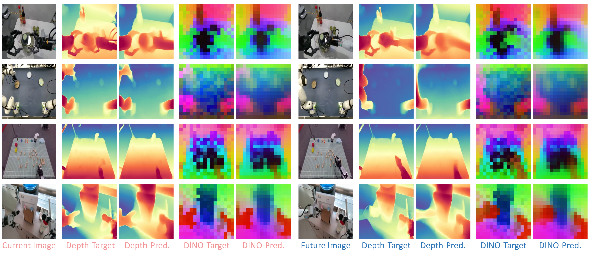
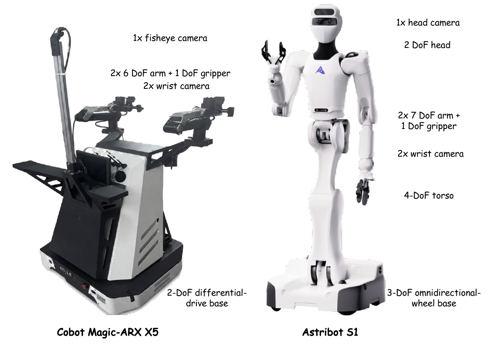
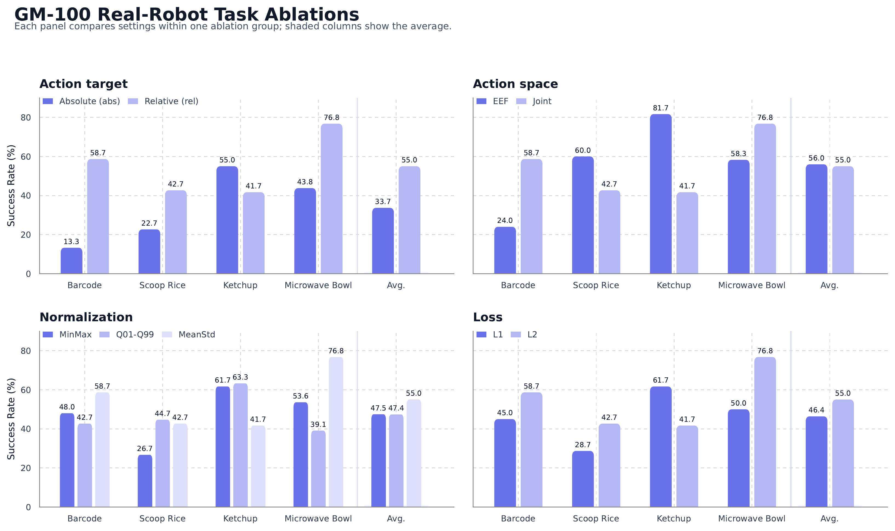

Paper Deep Dive · VLA · Cross-Embodiment
LingBot-VLA 2.0：VLA 从预训练走向真机，真正缺的是什么
这不是靠一个新模块取胜的论文，而是一套 VLA 工程闭环：先把机器人和第一视角视频清成 6 万小时可学习数据，再统一 55 维全身动作，用稀疏 MoE 扩大动作容量，最后用当前/未来的深度与视频特征迫使表征理解“下一步世界会怎样”。
0. 一句话结论 #
LingBot-VLA 2.0 用 50K 小时跨本体机器人数据与 10K 小时第一视角视频预训练，把异构执行器统一成 55D 全身动作接口，以稀疏 MoE 扩大 action expert 容量，并用 DINO-Video/深度的当前与未来特征做辅助蒸馏；它提升了混合任务和移动操作表现，但收益来自数据、backbone、动作设计和蒸馏的共同升级，论文没有把每一项贡献完全拆开。
核心 insight：VLA 的“最后一公里”不是再加一个更大的动作头，而是同时解决三种错配：不同机器人动作语义不一致、视觉表征对几何和未来变化不敏感、dense action expert 容量随计算一起增长。LingBot-VLA 2.0 分别用 canonical 55D 接口、双查询蒸馏和 sparse MoE 处理它们。
1. 论文定位：带预测监督的 VLA，不是显式 World Model #
任务仍是语言条件连续控制。给定当前多视角图像 $I_t$、指令 $l$ 和本体状态 $s_t$，策略生成长度为 $H$ 的动作 chunk：
与 $\pi_0/\pi_{0.5}$、GR00T 一类 VLA 相同，最终输出是动作，不是未来视频。不同点是它在训练时增加 $Q_t$ 与 $Q_{t+H}$ 两组 perceptual query，让当前上下文预测当前和未来帧的深度、DINO-Video patch feature。
| 系统 | 训练中的未来对象 | 推理时如何出动作 | 是否显式 roll out 世界 |
|---|---|---|---|
| LingBot-VLA 2.0 | 未来深度与 teacher latent | flow-matching action expert | 否 |
| 典型 VLA | 通常没有，或只做 auxiliary feature | action tokenizer / diffusion / flow | 否 |
| 显式 WAM | 未来视频、world latent 或状态转移 | 从 imagined future 读出/规划动作 | 是 |
更严格地说，它学习的是指令与当前观测条件下的预期未来表征。公开配置明确屏蔽 action suffix 读取 future query，future query 也不读取待生成动作，因此它不是 $p(z_{t+H}\mid z_t,a_{t:t+H})$ 这种 action-conditioned dynamics，而是用未来监督塑造 policy representation。
2. 方法总览：数据、表征、动作三条流在一套 MoT 中汇合 #
Robot pool 90K h -> motion/state/video quality filters -> 50K h
Ego pool 20K h -> VLM filter + SLAM/MANO reconstruction -> 10K h
|
3 camera images + instruction + perceptual queries
v
Qwen3-VL prefix stream
|
state s_t + noisy action x_tau + flow time tau
v
36-layer Qwen2 Action Expert
shared attention / separate FFN
every expert FFN -> sparse MoE
|
velocity v_theta -> action chunk
Training only: Q_t, Q_t+H -> depth/DINO projections -> teacher losses
Inference only: cache prefix KV -> 10 Euler denoising steps -> 55D actions
| 模块 | 公开实现中的形状/配置 | 数据流 |
|---|---|---|
| VLM | Qwen3-VL-4B-Instruct，36 层 | 3 视角图像 + 最多 72 text tokens + query tokens |
| Action Expert | 36 层，hidden 768，32 Q heads / 8 KV heads | state token + $[B,50,55]$ noisy action |
| Action MoE | 32 routed experts，top-4；所有 36 层启用 | 每个 action token 经过 shared expert 与 4 个 routed experts |
| Perceptual query | 每组 8 tokens；current/future 两类 | cross-attention projection 到 1024D teacher patch space |
| Flow sampler | 默认 10 steps；action chunk 50 | 高斯噪声 $\rightarrow$ 连续 55D 动作 |
这些数字来自公开的 real-robot post-training 配置和模型代码，而不是论文中所有实验的统一超参。不同 checkpoint 可以覆盖配置，因此复现时应以对应 checkpoint 的 `config.json` 为准。
3. 关键创新点 #
3.1 先把 110K 小时原始池变成 60K 小时可学习数据
旧方法的瓶颈：跨本体数据不是拼在一起就能训练。机器人日志会有状态漂移、视频掉帧、控制静止、视角不同步；第一视角视频更没有机器人 action，还混入走路、旁观视角和无交互片段。
机器人数据：团队从 20 种本体的 90K 小时原始池中过滤到 50K 小时。数值侧检查三阶有限差分 jerk，并对速度、加速度做 Z-score；全状态/动作近乎静止超过 95% 的 episode 被丢弃。几何侧根据 URDF 和 state replay，把机器人投影回图像并人工确认视频-状态同步。画面模糊、严重遮挡、掉帧和多视角错位再由人工过滤。
第一视角数据：20K 小时先经 VLM 去除非 ego、纯走路、无手物交互和他人手部画面，再通过 egocentric SLAM 与 MANO hand pose 重建轨迹。至少 20% 帧需要有效手姿，异常位移、速度、加速度、jerk 和不合理人体运动会被拒绝，最终保留 10K 小时。

这里 $p_\tau^W\in\mathbb R^3$ 是世界系中的未来手点，$T_{C_t\leftarrow W}\in SE(3)$ 固定使用当前时刻相机位姿。这样得到的是“从当前视角看，手接下来要去哪里”，而不是相机和手一起移动后的表观轨迹。
3.2 55D 动作接口：统一维度只是表面，mask 与相对目标才是关键

旧方法的瓶颈：双臂、灵巧手、人形、移动底盘拥有不同控制接口。简单 padding 会让缺失维度产生伪监督，绝对关节角又把不同初始姿态和任务混进回归目标。
它怎么改：所有样本进入固定 55D state/action tensor，缺失执行器通过 embodiment mask 从 loss 和执行中移除。论文消融进一步选择 relative joint target 与 MeanStd normalization。相对动作把目标从“预测全局姿态”改成“预测当前位置附近的修正量”。
为什么有效：四个 GM-100 任务中，relative joint action 的 pooled 标准差由绝对动作的约 0.80 降至 0.28，平均成功率从 33.7% 提升到 55.0%。MeanStd 保留长尾纠偏动作，成功率 55.0%；MinMax 与 Q01-Q99 将大部分值压到窄区间，只得到 47.5% 和 47.4%。
限制：joint 与 EEF 平均表现接近，55.0% 对 56.0%，但不同任务差异很大。接触丰富的挤番茄酱更偏好 EEF，扫码与从微波炉取碗更偏好 joint。不存在一个对所有运动学结构都最优的坐标系。
3.3 Sparse MoE Action Expert：扩大容量，不让每个 token 支付全部计算
旧方法的瓶颈：跨 20 种本体、全身 55D 控制和大量任务时，一个 dense FFN 必须同时容纳相互冲突的运动模式；直接加宽每层会让每个 token 的 FLOPs 一起上升。
它怎么改：action expert 每层 FFN 由一个 shared expert 和 $N_r$ 个 routed experts 组成，每个 token 只激活 top-$K$ routed experts：
论文的路由先在 FP32 中算 $s_j=\sigma(u^\top e_j)$。选择专家时使用 $s_j+b_j$，混合权重却只用未加偏置的 $s_j$ 归一化。负载偏差只改变“谁被选中”，不污染实际专家输出权重：
为什么有效：shared expert 吸收通用控制模式，routed experts 可以按本体、动作阶段或接触模式形成条件容量。论文在 active-parameter matched 对比中观察到 MoE 更低的预训练 loss 与 GM-100 action error，但没有给出专家究竟学成了何种语义的分析。
实现差异：论文主推 auxiliary-loss-free balancing；公开 real-robot recipe 却设置 `bias_update_speed: 0`，并启用 `sequence_wise_loss_coeff: 1e-3`、`router_z_loss_coeff: 1e-4`。也就是说，论文方法与默认后训练配方是两种可选平衡机制，复现者不能把它们当成同一件事。
3.4 双查询蒸馏：预测未来，但不生成未来
旧方法的瓶颈：图文预训练擅长物体语义，却不必精确编码深度、接触关系和“执行指令后下一帧应该发生什么”。只靠 action loss，视觉特征容易学习到能拟合动作但不稳定的捷径。
它怎么改：在 VLM prefix 中加入 current/future query。LingBot-Depth 提供像素几何目标，DINO-Video 提供 patch-level 时空语义目标：
DINO-Video 从 DINOv3 初始化，在 5M 段互联网、ego 与机器人视频上加入 block-wise causal temporal attention 和 3D RoPE 训练。LARYBench 上，它在 Robot 分数达到 71.97，高于 DINOv3 的 69.06 和 V-JEPA2 的 70.43；在 RoboCOIN/AgiBot 的特征变化误差也最低。

限制：论文只展示蒸馏后的可视化，没有给出“去掉 current/future depth/video loss 后真机成功率变化”的完整 action ablation。因此它证明了 query 能预测 teacher feature，却没有单独证明这些 feature 是主表中策略提升的原因。
4. 训练和推理流程 #
训练输入与输出
每个样本包含三视角图像、语言指令、55D state、$[H,55]$ action 及有效维度 mask。若开启蒸馏，还需要当前/未来图像生成 depth 和 DINO-Video teacher targets。公开配置使用 $H=50$、三路相机和 8 个 task-query tokens。
- Qwen3-VL 将图像、指令、current/future queries 编成 prefix tokens。
- 从 $\epsilon\sim\mathcal N(0,I)$ 和时间 $\tau$ 构造 noisy action $x_\tau$。
- state、$x_\tau$ 与 time embedding 进入 action expert suffix。
- 两个 token stream 逐层联合 attention，各自通过独立 FFN；action FFN 使用 MoE。
- action head 回归 flow velocity；query projections 回归 depth/video teacher feature。
- mask 后的 flow loss、蒸馏 loss 与可选路由 loss 联合反向传播。
推理输入与输出
- 只输入当前三视角图像、指令和 state，不需要未来帧、深度模型或 DINO-Video。
- VLM prefix 前向一次并缓存 36 层 KV。
- 初始化 $x_1\sim\mathcal N(0,I)$，重复 10 次 action-expert 前向；每次只计算 suffix，复用 prefix KV。
- 得到 $[B,50,55]$ 动作，按本体配置反归一化并裁出有效维度；控制端可只执行前若干步，再重规划。
官方 README 报告 RTX 4090D、10 个 denoising steps 时约 130 ms/次。这是模型调用延迟，不等于完整传感、网络、反归一化和机器人控制闭环的端到端延迟。
5. 公式与代码逐项对齐 #
5.1 Flow matching 的方向别看反
代码中 $\tau=0$ 是 clean action，$\tau=1$ 是 noise。训练预测从 action 指向 noise 的速度 $\epsilon-a$；推理却从 $\tau=1$ 往 0 积分，$\Delta\tau=-1/N$，因此 `x_t += dt * v_t` 实际沿反方向把噪声拉回动作。这与常见“0 是噪声、1 是数据”的记号相反，但计算一致。
5.2 联合 attention 不是简单 cross-attention
每层分别从 VLM stream 与 action stream 计算 $Q,K,V$，再沿 token 维拼接做一次 attention：
$M$ 是 block mask，决定 action token 能否读图文和 query。attention 输出切回两个 stream 后，再分别进入各自的 residual/FFN。这就是 Mixture-of-Transformers：交互发生在 attention，容量和模态归纳偏置留在各自参数中。
5.3 Teacher target 的张量
| 张量 | 公开配置/推导形状 | 实现操作 |
|---|---|---|
| state | $[B,55]$ | Linear(55, 768) 形成 suffix state token |
| noisy action | $[B,50,55]$ | Linear(55, 768) 后与 time embedding 融合 |
| current/future query | 每组 $[B,8,d_{vlm}]$ | cross-attention projector 对齐 teacher token |
| DINO patch target | $[B,N_p,1024]$ | MSE/Frobenius loss |
| depth target | 由 224 输入产生的 dense token/map | L1 loss |
| flow velocity | $[B,50,55]$ | Linear(768, 55)，按 embodiment mask 求 loss |
【不确定】论文正文没有完整给出采样频率、不同本体的 action execution horizon、机器人预训练时每类数据占比以及 6B 模型总训练 steps。公开 YAML 主要是 post-training 示例，不能反推出 foundation pretraining 的完整配方。
6. 训练与推理细节对齐 #
| 检查项 | 训练 | 推理 | 风险 |
|---|---|---|---|
| 未来图像 | 作为 teacher target | 不可见 | 蒸馏建立的是隐式预测能力，不能在线纠正错误未来 |
| Teacher | LingBot-Depth + DINO-Video | 全部移除 | 部署便宜，但 teacher bias 会进入 student |
| Action noise | 随机 $\tau$，一次监督某个噪声层级 | 固定 10 步 Euler 全路径 | 标准 flow train-test discrepancy |
| Action context | ground-truth action 加噪 | 模型自己的中间 sample | 误差会在 denoising 与 chunk execution 中累积 |
| Prefix | 每个 batch 完整计算 | 先算一次并缓存 KV | 相机更新后 cache 必须失效，不能跨 observation 复用 |
| Normalization | MeanStd 更优 | 必须用同一统计量反归一化 | 跨本体统计混用会放大执行尺度错误 |
| Chunk | 一次预测 50 步 | 可只执行前 $h<50$ 步 | $h$ 决定响应性与动作平滑的折中 |
公开代码还有一个重要防泄漏设计：`block_future_depth_to_action` 与 `block_suffix_to_future_video` 默认开启。未来 query 不能直接把真实 future target 送给 action token；teacher target 只通过 loss 约束 query hidden state。这让训练/推理条件保持一致。
7. 实验复盘：结果有效，但因果归因不够干净 #
GM-100：同一策略混训 9 个双臂任务
| 平台 | GR00T N1.7 | $\pi_{0.5}$ | LingBot 1.0 | LingBot 2.0 |
|---|---|---|---|---|
| AgileX Cobot Magic Progress / Success | 36.3 / 17.8 | 59.1 / 32.2 | 58.2 / 30.0 | 66.2 / 34.4 |
| Galaxea R1 Pro Progress / Success | 16.4 / 5.6 | 27.4 / 8.9 | 32.7 / 15.6 | 34.6 / 15.6 |
AgileX 上相对 1.0 的 progress 提升 8.0 点，但 Galaxea 上只提升 1.9 点，success 仍是 15.6%。逐任务还出现回退：AgileX 的 block sorting、sort snacks、pack eggs、tool packing 并未全面超过强 baseline。论文自己的解释也承认，模型常能推进任务，却在最终精准放置、释放和收尾失败。
长时移动操作：15 次试验，OOD 同时考位姿与物体变化

| 任务 | 设置 | LingBot 2.0 | $\pi_{0.5}$ |
|---|---|---|---|
| 冰箱整理 | ID | 77.1 / 60.0 | 65.3 / 46.7 |
| 冰箱整理 | OOD | 37.0 / 13.3 | 30.3 / 6.7 |
| 灶台清洁 | ID | 84.3 / 66.7 | 79.9 / 60.0 |
| 灶台清洁 | OOD | 67.5 / 40.0 | 62.5 / 33.3 |
OOD 冰箱任务既扰动初始位置 $\pm10$ cm，又替换水果和水瓶类别，因此比只扰动起点的灶台任务更难。15 次试验意味着 success 的一个样本就是 6.7 个百分点；表中多个 6.7 点差异实际上只相当于多成功一次，论文没有报告置信区间或显著性检验。
消融真正证明了什么

- 有直接证据：relative 比 absolute 好；MeanStd 比 MinMax/Q01-Q99 好；L2 平均优于 L1；MoE 在 active-compute matched 下 loss/action error 更低。
- 只有表征证据：双查询能重建 current/future depth 与 DINO feature，但没有完整真机 action ablation。
- 没有被隔离：60K 小时数据、清洗、Qwen3-VL backbone、55D 动作、MoE、蒸馏从 1.0 到 2.0 一起变化，主表无法回答谁贡献最大。
- 比较公平性【不确定】：论文没有充分披露 $\pi_{0.5}$/GR00T 的训练数据量、训练步数、调参预算与模型规模是否严格匹配。
8. 可复现清单 #
| 项目 | 公开内容 | 复现注意点 |
|---|---|---|
| 基础模型 | 6B native-depth checkpoint；Qwen3-VL-4B-Instruct | 确认 checkpoint config 覆盖默认 14D/50 chunk 配置 |
| 环境 | Python 3.12、PyTorch 2.8、FlashAttention 2.8.3 | FSDP2、FlexAttention、fused MoE 对 CUDA/torch 版本敏感 |
| 数据 | LeRobot v2.1/v3.0、robot YAML、RoboTwin 2.0 示例 | 相机名、state/action key、频率和时间戳必须先对齐 |
| 动作 | 55D、MeanStd、50-step chunk | 为每个本体生成有效维度 mask 与独立统计量 |
| MoE | 32 experts、top-4、36 layers | 监控 dead expert、load ratio、router bias；不要同时误用两套平衡机制 |
| 蒸馏 | depth/video 权重各 0.004，teacher target 1024D | 需要额外 MoGe/LingBot-Depth 与 DINO-Video checkpoint；future frame 必须与 action horizon 对齐 |
| 优化 | Muon 可选；示例 LR $5\times10^{-5}$，40K steps | README 称 Muon 更慢但收敛更好；AdamW 是兼容后备 |
| 推理 | 10 denoise steps，prefix KV cache | 官方约 130 ms/call；执行窗口 `use_length` 示例为 25 |
论文没写清楚：60K 小时数据混采权重、foundation pretraining steps/算力、各本体 action frequency 重采样方法、future horizon 的物理时间、EMA/warmup/weight decay、真机安全限幅与重规划触发条件。合理猜测是按本体做 sampling balance、统一到固定 action rate，并在部署侧做 delta clipping；应通过训练配置、dataset transform 和 robot controller 三处交叉验证，而不是只看模型 YAML。
9. 可以继续往哪里改 #
| 改动点 | 预期收益 | 风险 | 验证实验 |
|---|---|---|---|
| 让 future query 显式条件于候选 action | 从 goal prior 升级为 action-conditioned dynamics，可做反事实比较 | 训练时 GT action 泄漏，推理时 sampled action distribution shift | 同状态采多个 action，比较未来 latent 排序与 MPC 成功率 |
| 多时间尺度 queries：$t+8,t+25,t+50$ | 同时学习接触瞬间与子任务结果 | query 竞争、teacher loss 过强 | 按 horizon 做 feature error 与长时成功率消融 |
| 按运动学结构进行层级 MoE routing | arm/base/hand 专家共享与专化更可控 | 先验错误会限制跨本体迁移 | 比较 token routing、embodiment routing、hybrid routing |
| joint + EEF 双头与可学习融合 | 适配姿态约束任务和接触任务 | 两种动作不一致，IK 可能不可解 | 增加 FK consistency loss，逐任务报告选择比例 |
| 失败段与收尾动作重采样 | 缩小 progress-success gap | 数据分布被失败边界主导 | 按 milestone 末 20% 过采样，检查最终放置/释放成功率 |
| 不确定性驱动的短 chunk 重规划 | OOD 与接触时更快纠错 | 推理频率和抖动增加 | 基于 flow sample variance 动态选择执行 5/15/25 步 |
10. 速读备忘卡 #
- LingBot-VLA 2.0 是 VLA system paper，不是单一架构 trick。
- 数据从 90K 小时机器人 + 20K 小时 ego 原始池清到 50K + 10K 小时。
- ego 手轨迹先在世界系恢复，再变换到当前相机系，隔离相机自运动。
- 统一接口是 55D：arm、EEF、gripper、hand、waist、head、base 与 reserved。
- relative joint target 显著降低方差，平均成功率 33.7% → 55.0%。
- MeanStd 保留长尾纠偏动作，比 MinMax 与 Q01-Q99 更好。
- action expert 每层 FFN 使用 sparse MoE；shared expert + top-K routed experts。
- 论文的 loss-free routing 与公开 post-training 默认辅助路由 loss 不是同一配方。
- 双查询预测 current/future depth 与 DINO-Video feature，不生成未来像素。
- future query 不条件于待生成 action，因此它是 predictive representation，不是显式 dynamics model。
- GM-100 的提升集中在部分任务，Galaxea success 对 1.0 没有提升。
- 代码、训练配方、部署脚本和 6B checkpoint 已公开，复现条件优于多数工业 VLA 报告。
最后记住一句：它最有价值的不是“VLA 也能预测未来”，而是把数据质量、动作统计、条件容量和未来监督放进同一条可部署训练链路。